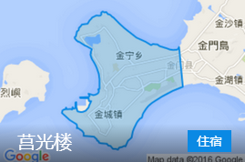

路线概览
D1水头聚落(2小时) 金水国小(0.5小时) 翟山坑道(2小时) 清金门镇总兵署(1.5小时) 莒光楼(1.5小时) 金门慈湖(1小时)
D2建功屿(1小时) 浯江书院(1小时) 金门民俗文化村(2小时) 古宁头战史馆(1.5小时) 陈景兰洋楼(1小时) 中山纪念林(1小时)
游玩攻略
今日行程先前往水头聚落欣赏中西合并的独特风格，午饭后游览经典的翟山坑道，然后去最具盛名的莒光楼，傍晚在金门最大的咸水湖慈湖欣赏日落。
水头聚落(2小时) 步行3分钟金水国小(0.5小时) 电动车20分钟翟山坑道(2小时) 电动车0.5小时清金门镇总兵署(1.5小时) 电动车5分钟莒光楼(1.5小时) 电动车0.5小时金门慈湖(1小时)
水头聚落
风格独特的闽南古厝与西式洋楼的风格，令游人赞叹
金水国小
阿拉伯风格的西洋建筑，校内保留了昔日课堂原貌
翟山坑道
战事防御水陆两用坑道，人工穿凿，工程雄伟，是不可错过的观光景点
清金门镇总兵署
清朝肃静威武的衙门口，地牢里的蜡像相当逼真
莒光楼
金门最具盛名的景点之一，仿古代麒麟阁三层式建筑，外观雄伟、气宇非凡
金门慈湖
鸟类繁衍栖息地，赏鸟不可错过的地方
交通攻略
金门市区不大，最佳交通方式是租电动车或包车，两人行（情侣）适合电动车，人数较多（家庭）适合包车，方便出行游玩。包车建议提前到水头码头的游客中心咨询，查租车行的电话，或可以坐车到金城车站，在金城车站附近也有租车行。每天的租车费用大概是400新台币。
门票攻略
今日行程中所涉及景点均无需门票。
餐饮攻略
金门美食特⾊：广东粥、咸粿炸、满煎糕、蚵仔面线。中午推荐在金水国小吃饭，由于金门慈湖周边餐馆较少，建议莒光楼附近就餐。
金水国小周边美食：
金道地小吃店
台湾小吃
金道地小吃店
位置：距离金水国小约10米
价格：人均NT$405福记肉羹面
粥粉面店
福记肉羹面
位置：距离金水国小约3.2公里
价格：人均NT$255莒光楼周边美食：
寿记广东粥
粥店面食
寿记广东粥
位置：距离莒光楼约1公里
价格：人均NT$350巧味香
台湾小吃
巧味香
位置：距离莒光楼约1.1公里
价格：人均NT$305金门县周边美食：
高坑牛肉店
台湾菜
高坑牛肉店
位置：位于金沙镇
价格：人均NT$250
住宿攻略
莒光楼居金门市中心，交通方便，建议选择该区域入住。
D2游玩攻略
饱览金门海域之美的建功屿，然后参观保存最好的古厝建筑群，和陈列着很多战时的武器古宁头战史馆。最后是逛一下有金门第一洋楼美名的陈景兰洋楼。
建功屿(1小时) 电动车15分钟浯江书院(1小时) 电动车30分钟金门民俗文化村(2小时) 电动车20分钟古宁头战史馆(1.5小时) 电动车10分钟陈景兰洋楼(1小时) 电动车20分钟中山纪念林(1小时)
建功屿
一处可饱览金门海域之美的最佳观景处
浯江书院
金门民俗文化村
十八栋传统闽南二进式双落建筑，格局壮阔整齐，金门保存最好的古厝建筑群
古宁头战史馆
军事爱好者可了解古宁头战役的战况
陈景兰洋楼
视野开阔优美，有金门第一洋楼美名
中山纪念林
首个于金门县设立的森林游乐区
交通攻略
金门市区不大，最佳交通方式是租电动车或包车，两人行（情侣）适合电动车，人数较多（家庭）适合包车，方便出行游玩。包车建议提前到水头码头的游客中心咨询，查租车行的电话，或可以坐车到金城车站，在金城车站附近也有租车行。每天的租车费用大概是400新台币。
门票攻略
今日游览的景点无需门票。
餐饮攻略
中午推荐金门民俗文化村吃饭，晚上逛完中山纪念林后就餐，这里餐厅较少，如不赶时间，也可回酒店附近吃晚餐。
金门民俗文化村:
沙美闽式烧饼
小吃
沙美闽式烧饼
位置：距离金门民俗文化村约3.4公里
价格：人均NT$60老爹牛肉面
传统台式口味，纯手工面，蚂蜂窝、⼤众点评推荐。
台湾菜
老爹牛肉面
位置：距离金门民俗文化村约6公里
价格：100NT$榕榕园面馆
面食
榕榕园面馆
位置：距离金门民俗文化村5.7公里
价格：160NT$中山纪念林：
六合极品海鲜锅物专门店
海鲜
六合极品海鲜锅物专门店
位置：距离中山纪念林1公里
价格：人均NT$580大方胡须伯
小吃
大方胡须伯
位置：距离中山纪念林约1.7公里
价格：人均NT$510
住宿攻略
莒光楼居金门市中心，交通方便，建议选择该区域入住。
